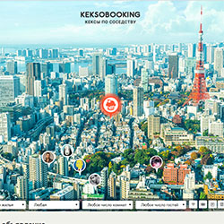
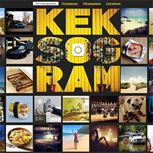
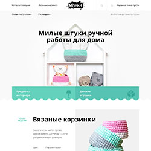
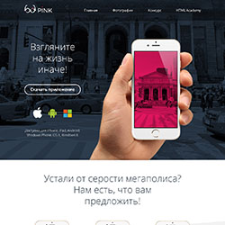
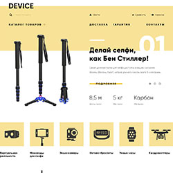
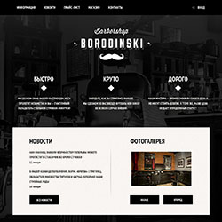
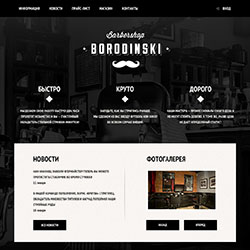

Обо мне
Привет! Я — начинающий front-end разработчик, успешно законила программу интенсивов «Профессия Фронтенд-разработчик» от HTML Academy. В данный момент живу в г. Владимир и нахожусь в поиске интересных предложений для профессионального роста и развития в данной сфере. Готова к переезду в другой город. Посмотреть резюме можно здесь.
Мои навыки:
- Верстка — являюсь сторонником красиво написанного кода как с точки зрения оформления, так и с точки зрения семантики. В работе стремлюсь осваивать новые технологии, использую методологию БЭМ, CSS препроцессоры LESS/SASS, HTML препроцессор Pug (Jade), автоматизацию/сборку проекта на Gulp.
- JavaScript — умею оживлять веб-страницы на ES5, стремлюсь искать оптимальные и лаконичные решения.
- Git — опыт работы с системой контроля версий git с использованием консоли.
- Photoshop — навыки работы, необходимые для верстки.
Портфолио
Проект «keksobooking», выполненный на учебном курсе
«Профессиональный JavaScript, уровень 1» в HTML AcademyПроект прошел проверку случайным наставником по всем критериям на 100%


- ES5
- Ajax
- Drag'n'Drop
- Templates
- Accessibility
- Validation
- ESLint
Одностраничное приложение по загрузке и форматированию фотографий на чистом JavaScript. Использована шаблонизация, валидация формы, технология Ajax, реализована сортировка фотографий по выбранному значению.
Ссылка на опубликованный сайтСсылка на репозиторий проекта в Github
Проект «mishka», выполненный на учебном курсе
«Профессиональный HTML и CSS, уровень 2» в HTML AcademyПроект прошел проверку случайным наставником по всем критериям на 100%

- HTML5
- CSS3
- Adaptive layout
- БЭМ
- Flex-box
- Accessibility
- Less
- Gulp
- WebP
- SVG
- Retina
- StyleLint
- Pixel-perfect
Адаптивная сетка, верстка с использованием flex-box, доступность (все интерактивные элементы доступны при использовании клавиатуры), кроссбраузерность (в т. ч. IE11). Реализованы слайдер и открытие модальных окон на JavaScript. Выполнена ретинизация и оптимизация изображений, использован SVG-спрайт.
Ссылка на опубликованный сайтСсылка на репозиторий проекта в Github

- HTML5
- CSS3
- Adaptive layout
- БЭМ
- Flex-box
- Accessibility
- Less
- Gulp
- WebP
- SVG
- Retina
- StyleLint
- Pixel-perfect
Адаптивная сетка, верстка с использованием flex-box, доступность (все интерактивные элементы доступны при использовании клавиатуры), кроссбраузерность (в т. ч. IE11). Выполнена ретинизация и оптимизация изображений, использован SVG-спрайт.
Ссылка на опубликованный сайтСсылка на репозиторий проекта в Github
Проект «device», выполненный на учебном курсе
«Профессиональный HTML и CSS, уровень 1» в HTML AcademyПроект прошел проверку случайным наставником по всем критериям на 100%

- HTML5
- CSS3
- БЭМ
- Flex-box
- Accessibility
- Less
- Gulp
- SVG
- Pixel-perfect
Фиксированная сетка, верстка с использованием flex-box, доступность (все интерактивные элементы доступны при использовании клавиатуры), кроссбраузерность (в т. ч. IE11). Реализованы 2 слайдера на CSS и открытие модальных окон на JavaScript.
Ссылка на опубликованный сайтСсылка на репозиторий проекта в Github
 

Профильное образование
Skypegithube-mail